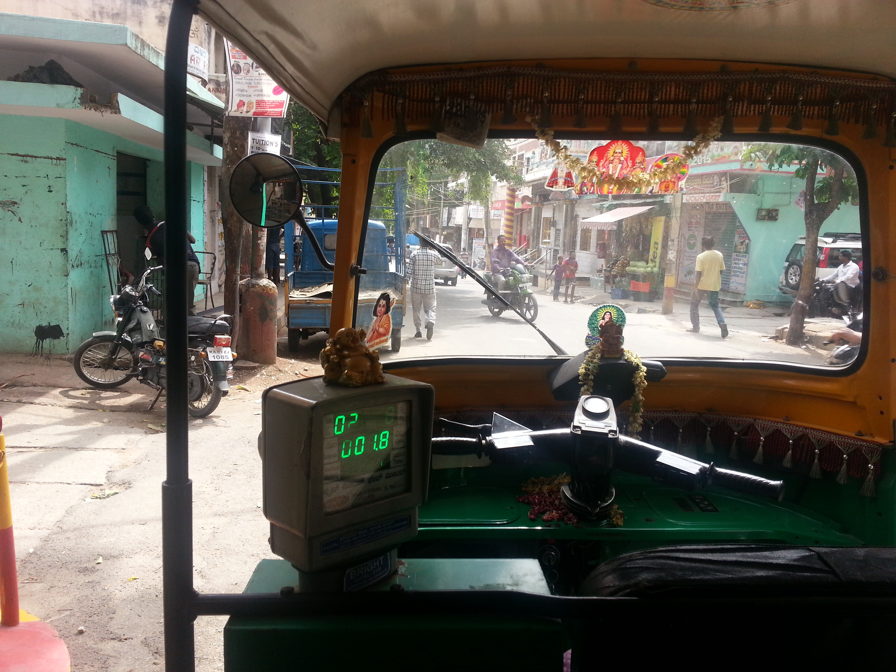

17기
17기

김민경
이국땅에서 보내는 만큼 얻는것이 많게 되는 곳인 것 같다. 부모 곁을 떠나 독립적으로 살아가면서 내가 쓰는 돈에 책임을 질 줄도 알아야 하고, 부모님이 얼마나 고생하면서 나를 키워왔는지를 재대로 느기게 되는 것 같다. 영어가 살아가기 위해서 써야 하는 만큼 많이 늘어서 영어권 국가에서 불편함은 있겠지만 살 만 할 것 같다는 느낌도 든다. 이곳은 소와 개가 거리에 넘쳐나고, 복지체계가 엉망이여서 노숙자들, 심지어 구걸하러 다니는 어린애들도 많아서 마치 80-90년대 한국을 보는 것 같은 느낌마져 든다. 이 곳에 살아가면서 내가 그동안 얼마나 감사하게 살아왔는지 다시 한 번 느끼게 해 주는 것 같다.